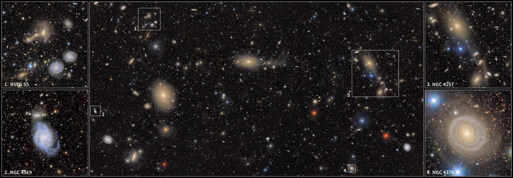
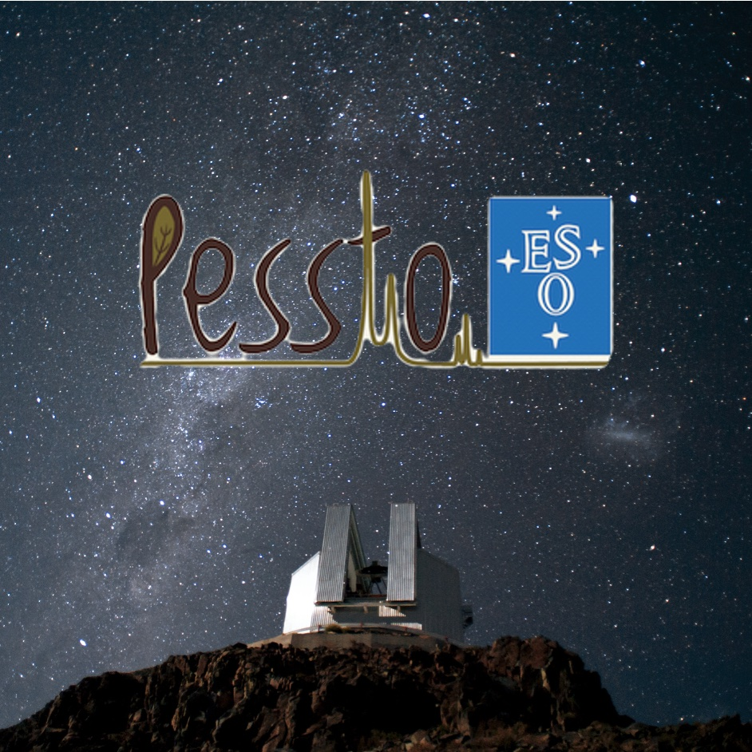
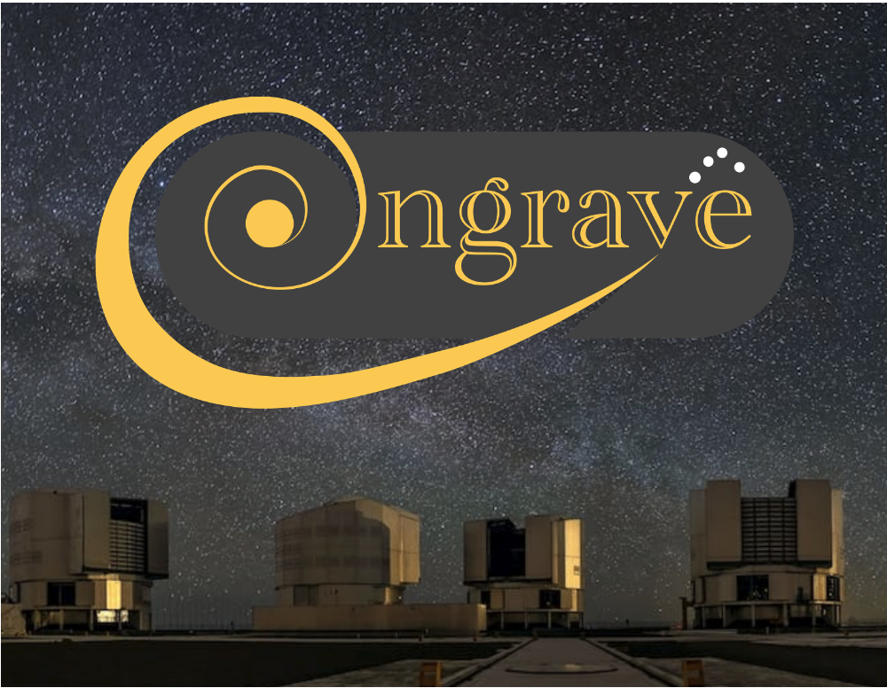
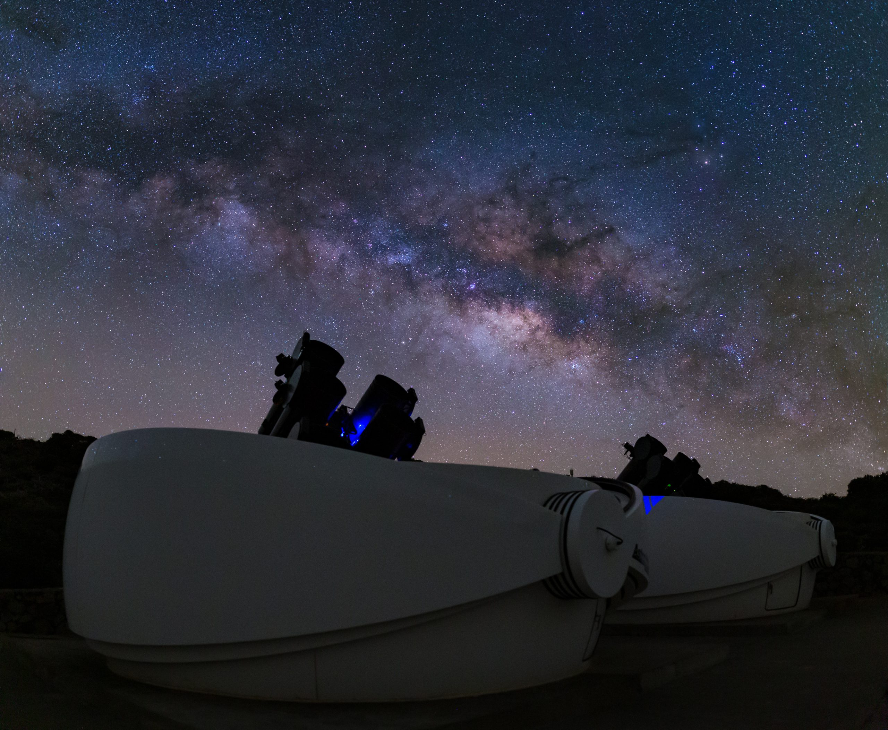

Research areas
Tidal Disruption Events
...
Supernovae
...
Projects and collaborations
Rubin/LSST
The Vera C. Rubin Observatory is an 8-m telescope equipped with the largest digital camera ever built (you can open the image on the right in a new tab and enjoy). It will conduct the Legacy Survey of Space and Time (LSST) over a ten-year period starting in early 2026. LSST will transform transient astrophysics by increasing, by orders of magnitude, the number of discovered transients, the volume of data produced, and the survey depth, while significantly extending the accessible redshift range for most transients. Meeting these challenges requires new analysis strategies that increasingly overlap with data science, including the use of machine-learning tools for transient classification and selection. I am actively involved in the TDE group of the Transients and Variable Stars (TVS) science collaboration.

PESSTO and its successors
PESSTO and its successor surveys (ePESSTO, ePESSTO+) have operated since 2012 at the NTT telescope in La Silla. Unlike most transient surveys, PESSTO is primarily spectroscopic, addressing the critical need for spectroscopic classifications and spectroscopic transient follow-up. My involvement dates back to the start of my PhD (2019) and recently (2026), I became the coordinator of the TDE science group, which has produced a number of key publications over the past years, including the first ever spectroscopic sample study of TDEs.

ENGRAVE
ENGRAVE is a large European consortium dedicated to the follow-up of gravitational-wave (GW) events and their electromagnetic (EM) counterparts. GWs are "ripples" in spacetime and one way that they can be produced is via the collisions and mergers of black holes and/or neutron stars. Black holes do not let light escape but if neutron stars are involved, the merger leads to an EM counterpart called kilonovae. These are transients that are fainter, faster and redder than supernovae. ENGRAVE's mission is to use ESO telescopes in order to obtain high-quality, homogeneous datasets and to provide robust physical interpretation of future kilonovae. I am an active member of ENGRAVE, regularly being part of the "on-duty" operations team, ready to trigger some of the world's largest telescopes as fast as possible.

GOTO
In 2016, the first direct detection of gravitational waves was announced by the Adv-LIGO experiment, produced by a merger pair of black holes. That significant discovery provided strong motivation to search for and identify optical counterparts. When the first binary neutron star merger (kilonova) was detected in 2017, an intense targeted search program was pursued by several collaborations and indeed a bright associated transient was discovered across the EM spectrum. It confirmed that this kind of multi-messenger astronomy is possible and also showed that the optical/UV band is well suited for very early searches, as it peaked within one day and started to fade after a couple of days. The Gravitational-wave Optical Transient Observer (GOTO) employs an idea of multiple wide-field telescopes on a single mount, necessary to map the large source regions on the sky that accompany detections of gravitational waves with LIGO and Virgo. As kilonovae are very, very rare, there are working groups within GOTO that study all the other types of transients that are discovered while searching for kilonovae. I am an active member of the TDE science group and the classification working group of GOTO.
